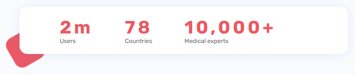

Секция-3
Подготовка
Секция-3 представляет собой довольно интересный блок, состоящий из двух этажей и мы сейчас будем встраивать сюда адаптивное видео.
Что касается брэйкпоинтов, то брэйкпоинты вы можете брать-писать любые. Я просто сейчас, как бы работаю с определенной сеткой, чтобы вам было понятно. Но, в своей работе вы можете использовать абсолютно любые брэйкпоинты, когда видите, что тут надо что-то поменять. В принципе так и нужно делать.
Тут мы уже можем линию переместить немножко, чтобы было лучше
Что тут у нас есть? - Блок, ограничивающий контейнер, первый этаж, состоящий из объекта с декором, цифрами и второй этаж - тоже здесь есть разделение на видео и текст

Тут я все-таки подвину видео, потому что так оно скорее всего и должно быть и, как раз, здесь проходит половинка. Тут мы немножко отступим от макета и сделаем его более нормальным. Здесь это максимально уместно, поэтому я покажу вам и этот прием
Назовем этот блок experts

Затем, создадим ограничивающий контейнер experts__container. И внутри сверху у нас будет experts__statistics statistics-experts
Для решения вопроса с декором, опять же, сделаем объект __body, в который поместим 3 пункта с цифрами и отдельно 3 объекта с декором. Это все у нас будет в блоке experts__statistics statistics-experts. Получается такая структура. Сразу сверстаем первый этаж, чтобы он у нас уже был - копируем классы и переносим в css

Стилизация общего и верхнего блока
Общий блок
Общий фон всей секции, как и у первой секции, серенький

Давайте здесь тоже построим коробку из линий для объекта по прошлому примеру

Отступы: сверху - 53 пикселя, снизу - 116 пикселей

Декор
Я не буду делать также, как прошлый раз с этим декором, покажу немного другой приём. Ширина блока с цифрами 655 пикселей, сразу выставим его по центру через margin, перенесем тень и радиус

Теперь, я попробую высовывать абсолютный декор - просто, чтобы он выглядывал. Попробую теперь такой прием соорудить
Только тогда у меня тут отступ будет гораздо выше - 103 пикселя
Дальше, зададим декору позиционирование по отношению к основному блоку статистики

Теперь займемся объектами декора. Первый объект - задаем свойства и позиционируем к statistics-experts__body

Получаем результат - декор оказался сверху

Поэтому, фон, тень и радиус мы снимем с блока statistics-experts и перенесем непосредственно для statistics-experts__body

И получаем то, что требуется
Вот таким образом я буду делать декор, то есть он будет просто выглядывать. И я вижу, что он выглядывает дальше, чем нужно - это наверное из-за поворота. Ничего, подгоним - исправим координаты с 31 пикселя на 21. Теперь порядок

Блок с цифрами
Все, я понял, что можно так использовать декор. Можно теперь сверстать блок с цифрами


Выставим пункты
Попробую автоматически позволить объектам все заполнить, потому что они тут разной ширины - я думаю, что этого будет вполне достаточно. line-height переведем в относительные единицы

Получилось неплохо, но можем сделать лучше, зафиксировав расположение и размеры пунктов


И закончим с текстом


Завершаем декор
Средний элемент расположен посередине, значит правая координата будет 50%, верхняя - 50 пикселей с повором получается 40 пикселей вверх

И последний декор

Почти получилось. Высота плашки в макете 117 пикселей, а у нас 101. Поэтому декор и проавливается в низ, т.к. плашка у нас получилась тоньше

Это потому, что я не поставил нижний отступ для цифр и внутренние отступы сверху-снизу для всего блока. Исправим ситуацию и добавим потерянные 15 пикселей

Теперь другое дело

Закончили с этим блоком и движемся дальше. Отступ от этого блока вниз 80 пикселей